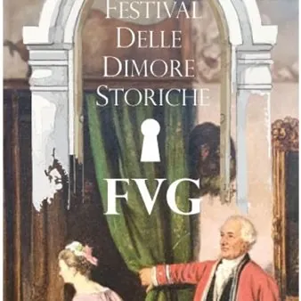

da sab 7 nov a dom 8 nov
4° Festival delle Dimore Storiche - autunno
Dal 7 al 8 novembre 2026 17 dimore aperte in FVG con visite guidate. La quarta edizione il Festival delle Dimore Storiche organizzato da ADSI FVG (Associazione delle Dimore Storiche): tre giorni per conoscere la storia del Friuli Venezia Giulia, visitando e vivendo il ricco…
 Indicazioni
Indicazioni
- Costi e prenotazioni
- Costo non indicato · Prenotazione non indicata
- Programma
- Programma da verificare. Apri la fonte ufficiale per orari e possibili aggiornamenti.
- In caso di maltempo
- Nessuna indicazione specifica pubblicata.
- Note
- Acquisito automaticamente dalla fonte.
L’EVENTO
Descrizione completa
Il Festival delle Dimore Storiche del Friuli Venezia Giulia, organizzato dall’Associazione Dimore Storiche Italiana – Sezione FVG (A.D.S.I. FVG), promuove il patrimonio culturale, storico, artistico e paesaggistico delle dimore storiche private, abitate ancor oggi dai proprietari, che aprono le proprie case, giardini e parchi ai visitatori, facendo loro da guide per raccontare le storie suggestive di cui sono impregnate. Rendi la tua esperienza al Festival ancora più speciale soggiornando in affascinanti dimore storiche del territorio. Potrai scegliere tra eleganti residenze ricche di storia e charme come Casa Foffani (Clauiano), Casaforte Bergum (Remanzacco), La Brunelde casaforte d’Arcano (Fagagna), Palazzo Scolari Salice (Polcenigo), Villa Attems (Lucinico), Villa Gallici Deciani (Montegnacco di Cassacco).
Lasciati avvolgere dall’atmosfera unica di questi luoghi e vivi il Festival in modo autentico. Per verificare la disponibilità e prenotare il tuo soggiorno, visita la pagina della dimora che preferisci e clicca su “ Pernotta da Noi ”.
Accesso alle visite
La visita guidata alla dimora è offerta ai visitatori che aderiranno per donazione libera alla raccolta fondi (minimo €10 a persona, gratuita per minorenni accompagnati; titolari della tessera Socio ADSI e Amico delle Dimore Storiche; titolari di Disability Card; giornalisti accreditati da ADSI FVG), che serviranno a sostenere i progetti di valorizzazione turistica del patrimonio culturale privato di ADSI FVG.
Orari
Le visite e gli eventi verranno effettuati secondo gli orari specificati per ogni dimora.
Scopri tutte le strutture che aderiscono all'iniziativa
IL PROGRAMMA
Programma e orari
Appuntamenti raccolti dalle fonti elencate. Dove manca un orario, non è ancora disponibile in questa scheda.
Programma pubblicato
- Dal 2026-11-07 al 2026-11-08
INFORMAZIONI UTILI
Prima di partire
- Controllare la fonte prima di partire.
ORGANIZZAZIONE